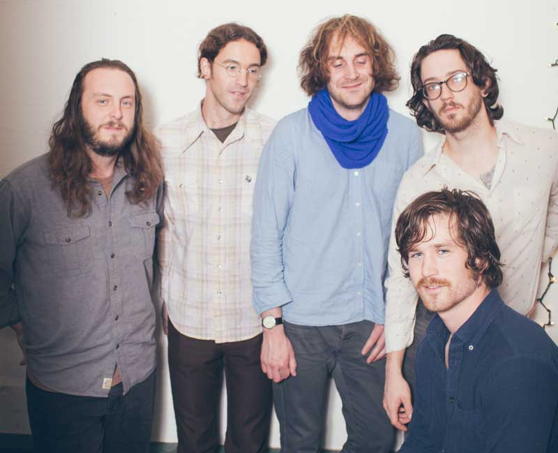

Ghettoblaster Magazine Premiers John Dillon's 'Living In Sin' // 3.22.2016

"Seattle, Washington five-piece John Dillon play the songs of Dillon Sturtevant. Songs that had lain spinning on hard-drives or clinging to cassette for years, transforming and shifting over the course of life-changes (including a move out to Seattle), finally made it to the light of day when members of Tomten, Kithkin, and friends got together to perform them live, for others.
The first record The Lost Estate coalesced out of this backlog of music and became sharpened, expanded, and will be available on vinyl LP from Plume Records on March 25 2016, and is already in the world on cassette from Never Anything Records. The album is a collection of pop songs, more or less, if a genre tag helps. Characterized by lush production, hi-lo-fi sounds, sincerity laced with humor, humor laced with melancholy, and a melodic bent. The Lost Estate was recorded in collaboration with engineer Andy Meyer in the summer of 2014 in Seattle. Live, the songs continue to transform and evolve in the hands of the players. John Dillon will be touring the Northwest and beyond in late March 2016..."
The Sound Of Confusion Premiers 'Holy Fool' // 3.15.2016
"...luscious, expansive and a little stately. In terms of structure, 'Holy Fool' is vintage pop that doesn't belong to a particular time, but for all its 'Be My Baby' drums, classic slide guitar and yearning melodies, it doesn't sound dated, although it does sound timeless, with a dreamy atmosphere that's thick but not overbearing. You could perhaps make comparisons to certain Pink Mountaintops songs in that respect ('Axis: Thrones Of Love' springs to mind), due to the subtle beauty that's tinged with sadness. Gorgeous."
Nooga.com Reviews John Dillon's "The Fox" and LP // 3.14.2016
"John Dillon isn't a man—it's a collection of musicians from Seattle who find comfort in the middle ground between a handful of musical disciplines. Working their way through the songs of frontman Dillon Sturtevant, the band combines a love of nostalgic synth pop with the languid rhythms of '60s-era Laurel Canyon. Their songs are laced with humor, self-deprecation and a sense of melancholy, but maintain a restless spirit that contributes to their endlessly fascinating sound. The band's music lives in the intangible reaches of their memory, with melodic filaments snaking their way through each track. The band is set to release their latest record, "The Lost Estate," March 25 via Plume Records.
On their latest single, "The Fox," the band drifts breezily through a buoyant melody accompanied by echoing vocals that feel as if you could reach and touch their gossamer lines. Equal parts hushed atmospherics and wobbly dream pop beats, the song is a wonder to hear, a languid exploration of the band's influences without the slightest trace of artifice or imitation. Guitars jangle and chime while drums patter away in the distance. Led by Sturtevant's penchant for mixing classic pop arrangements with waves of muddied dream pop noise, "The Fox" displays the band's inherent understanding of the genres within which they toil, as well as their need to share these partially obscured sounds."
"The Fox" Is Premiered On Surviving The Golden Age // 2.24.2016
Hey, Surviving the Golden Age is premiering John Dillon's "The Fox" today - take a listen!
"The track mixes vintage aesthetics with modern dream pop. It is reminiscent of Edwyn Collins‘ “A Girl Like You” with a sci-fi tilt"
Alright!
In just about a month - March 25th - you can pick up a copy of the band's LP "The Lost Estate" from Plume!
Plume Party Photos! // 2.24.2016

On January 31st Plume Records celebrated its existence with loving friends and family in the back bar at Liberty. Thank you to all who came and all who have supported us so far, we are beyond excited for the plans we're concocting this year! Stay tuned, and expect some more John Dillon tracks to premier leading up to "The Lost Estate" LP release on March 25th. More photo's here!
"The Lost Estate" Vinyl Release Show! // 2.19.16

Come celebrate the Plume Records release of "The Lost Estate" by John Dillon on LP! There will be records, buttons, cassettes, and the ever-popular download cards for purchase.
And while you're at it kick in a few bucks to help Lonesome Shack put out their double LP "The Switcher" via this link!
Joining those two groups will be legendary recording artists Bigfoot Wallace & His Wicked Sons - hear material from their new album in progress...
The show begins at 9 at The Sunset this March 31st.
[Daily Discovery] John Dillon // 2.03.2016

"Seattle’s John Dillon – comprised of Dillon Sturtevant, Andrew Lombardi, Jake Brady, Brian Noyeswatkins and Bob Martin – are getting ready to release their debut album, The Lost Estate, on March 25 via Plume Records. First single, “Death Mask,” is a rather nostalgic mix of Joy Division-esque vocals and lush 80’s synths. In other words, this is the band you need to watch this year."
John Dillon Upcoming Shows Announced // 1.22.2016
Thursday, February 18th @ 8:00pm // Tractor Tavern Seattle, WA // Bryan John Appleby + Andy + John Dillon // Buy tickets
John Dillon's single Death Mask for sale through Bandcamp // 1.22.2016

Plume Records is born! // 1.22.2016
Greetings Friends,
Over the past year Dillon Sturtevant and I discussed the possibility of starting a record label, in part to give a proper vinyl release to his forthcoming LP “The Lost Estate”, but also to cultivate a roster of artists whose recordings deserve more exposure. In the fall of 2015 we teamed up with our Webmaster and colleague Lisa Fortino, and thanks to her talents began building this site and developing our ideas. With the birth of Plume Records we hope to bring you a wide variety of music, beginning with the lush art rock of John Dillon, and delving further into a multitude of genres that hold undiscovered gems past and present.
Please enjoy the “Death Mask” single, our first release of 2016!
John Dillon’s upcoming full length “The Lost Estate” will be available on LP + Digital late March.
Cheers,
Brian Noyes-Watkins (Founder, Artistic Director, Plume Records)